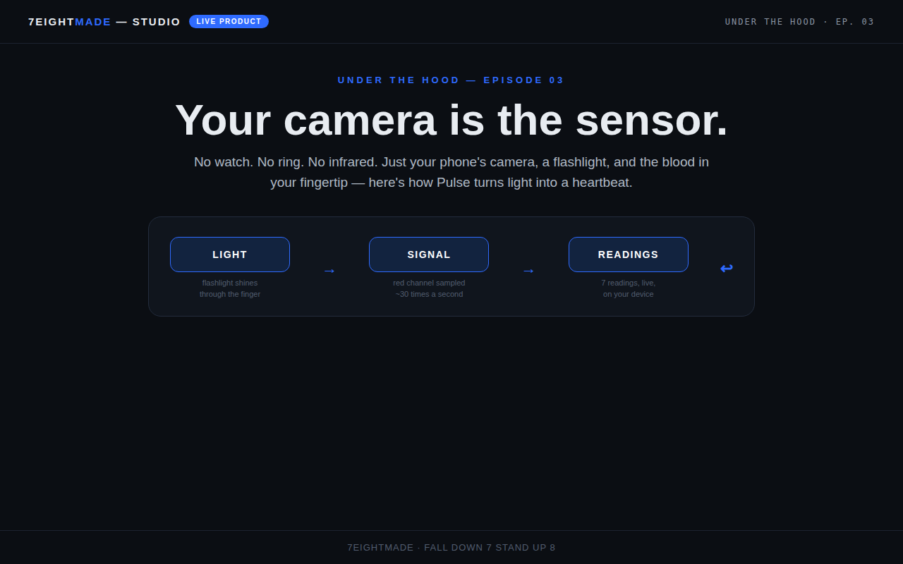
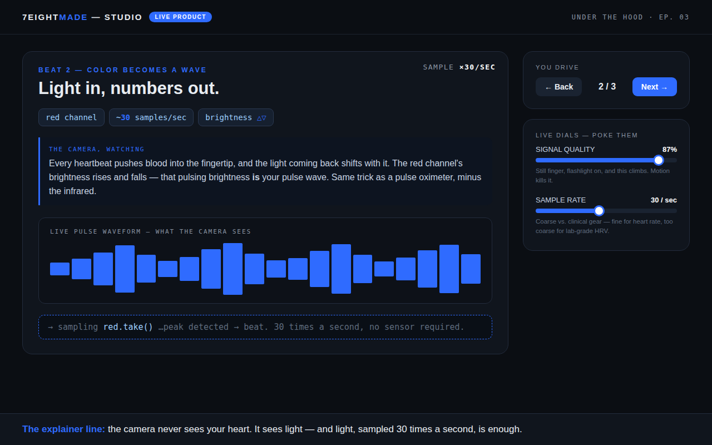
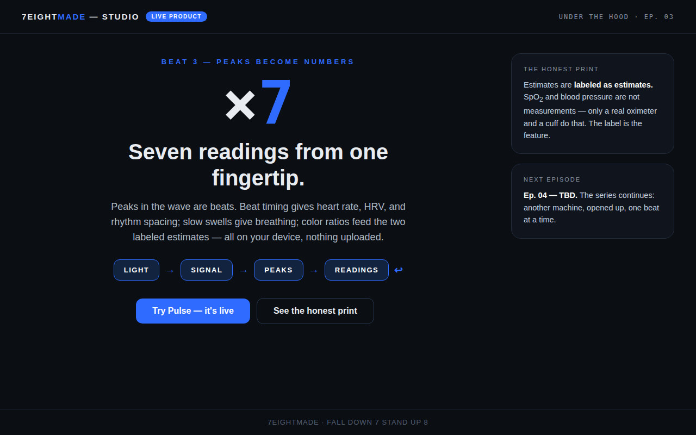
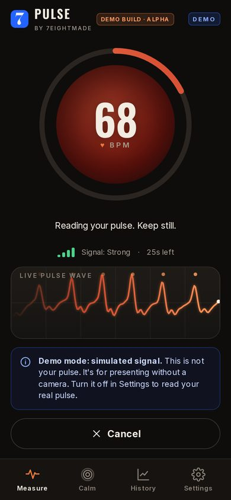
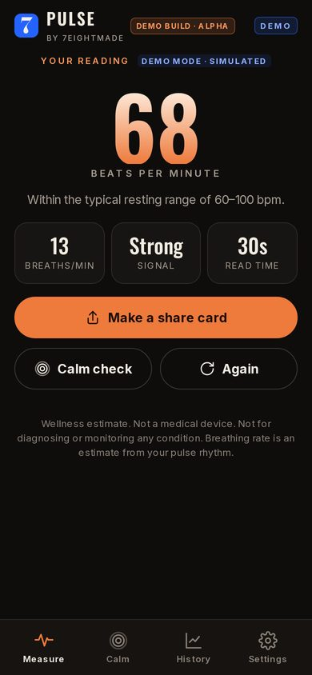
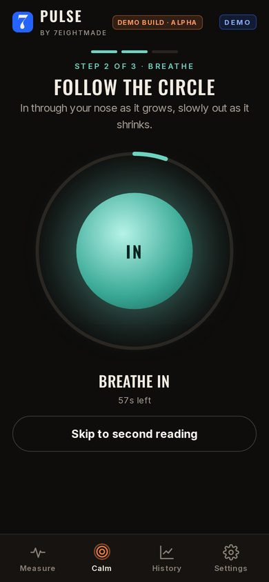
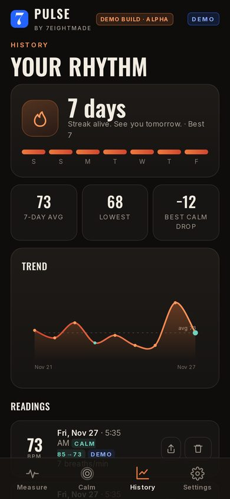

The 60-second calm check that lives in your phone camera.
Camera heart-rate apps already exist and most oversell. Pulse wins on three things the others skip: it labels every reading honestly, it turns a number into a ritual (check, breathe, check again), and nothing leaves the phone.
No ads, ever. They clash with a privacy promise.
Channels: Instagram · TikTok · YouTube Shorts · Product Hunt · Reddit · Studio page
Fall down 7, stand up 8.
Your camera is the sensor. Finger, flashlight, heartbeat — live.
SOLD NOVEMBER 2, 2026
Pulse began as a 7EightMade studio experiment — your phone camera as the sensor.
The demo stays up as a portfolio piece — proof of the work.
Ideas built here get picked up. 7EightMade builds ideas that sell.
Pulse is out. Open it on your phone, turn your flashlight on, and put your finger over the camera.
Try Pulse now →Runs in your browser. Nothing is uploaded or saved.
Pulse is a 7EightMade Studio demo that turns your phone's rear camera into a heart-rate reader. No watch, no sensor band, no sign-up. Your fingertip over the lens, the flashlight on, and the camera watches the tiny color changes in your skin as blood pulses through — that's the reading.
Seven readings, each labeled honestly for what it is:
Everything is processed on your phone. Nothing is uploaded, nothing is saved.
Three frames on how Pulse turns light into a heartbeat — no watch, no ring, no infrared.



Try Pulse now →DEMO BUILD · ALPHA
The 60-second calm check that lives in your phone camera.
The demo above grew into a real little app. Put a fingertip over the rear camera and Pulse reads your heart rate live, with a pulse wave, a breathing-rate estimate and a guided Calm check: a reading, a minute of slow breathing, then a second reading to show the change. It installs from the browser, works offline, and everything is analyzed on your device. Nothing is recorded, uploaded or tracked. Every screen carries the "Demo build · Alpha" label.
Try the demo app →Open it on your phone. iPhone: Safari › Share › Add to Home Screen. Android: Chrome › ⋮ › Install app.




Screens captured in the app's Demo mode, a simulated signal for presenting without a fingertip. On a phone, Demo mode is off and Pulse reads your real pulse.
The APK is a debug-signed testing build, not from the Play Store. To sideload it, download it on your Android phone, allow "Install unknown apps" for your browser, then open it. It installs as "Pulse (Demo)".
Pulse is open source and built with Vite and TypeScript, with a Capacitor Android project included. Unzip the source, then run npm install, npm test and npm run build for the installable web app in dist/, or npm run apk for the Android app (needs a JDK and the Android SDK). The iPhone app is generated on a Mac with Xcode. Step-by-step guides are in docs/BUILD.md and docs/SETUP.md inside the zip.
Wellness estimate. Not a medical device. The Pulse app is not for diagnosing, treating or monitoring any condition, and it does not measure blood oxygen (SpO₂) or blood pressure. Readings are estimates for wellness and demonstration only. If you have a health concern, talk to a qualified healthcare professional.
7EightMade Pulse is a passion project, not a medical product. We are not doctors or medical professionals, and this app is not a medical device. It does not diagnose, treat, cure, or prevent any condition. Readings are for education, wellness, and demonstration only, and some are estimates, as labeled above. Do not use them to make health decisions. If you have a health concern, talk to a qualified healthcare professional.